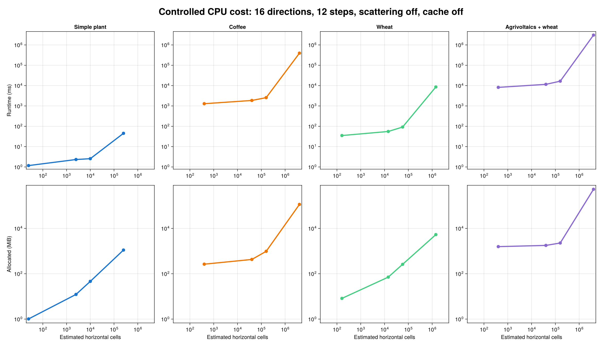
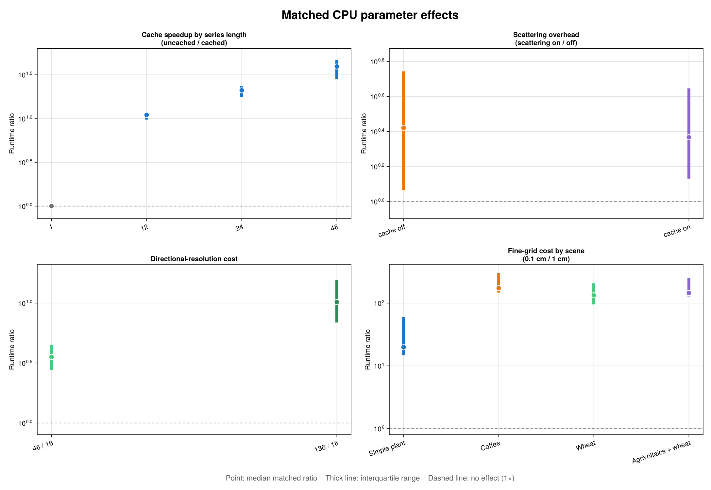

CPU Performance Benchmarks
This page explains one recorded CPU benchmark matrix for the artifact scenes. Its purpose is to show how numerical resolution, physical options, series length, and scene geometry shape the cost of an ArchimedLight simulation. The absolute timings belong to one machine and one run; the matched ratios are the more useful part when planning a simulation.
The result file contains one timing sample per configuration and does not record the processor, operating system, Julia version, thread count, commit, run date, or warmup count. The current driver defaults to zero warmups, and cold compilation is visible in the first rows. Use the results to understand cost structure, not to predict wall-clock time on another machine.
What Was Measured
The matrix uses the normal_cpu rasterization backend and varies:
| Parameter | Values |
|---|---|
| Scene | simple_plant, coffee, wheat, agrivoltaics_wheat, elaeis, elaeis_two_plants |
| Turtle directions | 16, 46, 136 |
| Pixel size | 0.1, 0.5, 1.0, 10.0 cm |
| Scattering | off, on |
| Radiation cache | off, on |
| Series length | 1, 12, 24, 48 steps |
For every sample, the benchmark constructs a fresh LightSimulation outside the timer and times the call sequence that runs the requested sky series. Scene-file loading is also outside the timer. Lazy validation, directional projection, and radiation-cache preparation triggered by the first run_light call remain inside the timed region. Consequently, a cached result includes the cost of building its cache before measuring the benefit of reuse.
The planned matrix has 1,152 rows. The committed result currently contains 643:
| Scene | Recorded | Successful | Skipped as huge | Not recorded |
|---|---|---|---|---|
| Simple plant | 192 | 156 | 36 | 0 |
| Coffee | 192 | 156 | 36 | 0 |
| Wheat | 192 | 156 | 36 | 0 |
| Agrivoltaics + wheat | 67 | 67 | 0 | 125 |
| Oil palm | 0 | 0 | 0 | 192 |
| Two oil palms | 0 | 0 | 0 | 192 |
The 108 skipped_huge_case rows are censored configurations, not fast measurements and not solver failures. They are excluded from log-scale plots and matched ratios. The agrivoltaics run stopped after all 16-direction cases and three 46-direction cases, so comparisons are always paired on every other parameter rather than averaged over the unbalanced matrix.
Scene Geometry And Raster Resolution
The first figure uses a controlled slice: 16 directions, 12 steps, scattering off, and radiation caching off. Both axes are logarithmic. Each point is one measured pixel size; the upper row shows runtime and the lower row shows cumulative Julia allocation.

The benchmark records a simple horizontal cell-count estimate from the scene domain and pixel_size:
\[N_\mathrm{cells} \approx \left\lceil\frac{L_x}{\Delta x}\right\rceil \times \left\lceil\frac{L_y}{\Delta x}\right\rceil .\]
Each factor is one estimated horizontal grid dimension, so reducing the pixel width by a factor of ten produces about 100 times as many estimated cells. This is a consistent cross-case proxy, not the solver's exact internal raster size: the solver derives its plot box from prepared bounds and its own rounding rules. Mesh and hit-stack effects then add to the nominal spatial scaling.
| Scene | Nodes | Faces | Domain (m) | Estimated cells at 0.1 cm | Estimated cells at 1 cm | Representative runtime |
|---|---|---|---|---|---|---|
| Simple plant | 4 | 68 | 0.5 × 0.5 | 250,000 | 2,500 | 0.328 ms |
| Wheat | 94 | 2,862 | 1.75 × 0.8163 | 1,429,750 | 14,350 | 5.279 ms |
| Coffee | 4,032 | 118,798 | 2 × 2 | 4,000,000 | 40,000 | 164.873 ms |
| Agrivoltaics + wheat | 22,373 | 681,158 | 0.4 × 10 | 4,000,000 | 40,000 | 1,018.62 ms |
The representative runtime fixes 16 directions, 1 cm pixels, one step, scattering off, and cache off. Coffee and agrivoltaics have the same domain area and the same 1 cm raster-cell estimate, yet agrivoltaics has 5.73 times more faces and is 6.18 times slower. Raster-cell count is therefore not a complete complexity measure: mesh traversal, the number and density of projected faces, hit-stack construction, and memory locality also matter.
Across matched configurations, changing from 1 cm to 0.1 cm pixels costs a median 19.7× for the tiny simple plant, 133.2× for wheat, 173.1× for coffee, and 144.7× for agrivoltaics. Complex scenes can therefore scale more steeply than the nominal 100× increase in grid cells. At coarse resolution the reverse also matters: fixed face-processing and per-direction work form a floor, so making pixels still larger eventually yields diminishing savings.
See pixel_size and First-Order Interception for the numerical meaning of the projection grid.
Matched Parameter Effects
The next figure compares configurations that differ in exactly one parameter. The point is the median matched ratio and the thick line is the interquartile range across configurations. It is not a repeated-run confidence interval. A ratio above one means that the numerator is slower.

| Effect | Comparison | Median ratio | Interquartile range | Pairs |
|---|---|---|---|---|
| Cache speedup | 1 step, uncached / cached | 1.000× | 0.974–1.029× | 80 |
| Cache speedup | 12 steps, uncached / cached | 11.036× | 9.744–11.875× | 56 |
| Cache speedup | 24 steps, uncached / cached | 21.007× | 17.596–23.465× | 56 |
| Cache speedup | 48 steps, uncached / cached | 39.296× | 28.101–46.725× | 56 |
| Scattering overhead | cache off, on / off | 2.638× | 1.167–5.542× | 124 |
| Scattering overhead | cache on, on / off | 2.330× | 1.352–4.431× | 124 |
| Direction cost | 46 / 16 | 3.565× | 2.771–4.465× | 195 |
| Direction cost | 136 / 16 | 10.193× | 6.884–15.501× | 84 |
Series Length And cache_radiation
Without radiation caching, median runtime scales almost linearly with the number of steps: 12, 24, and 48 steps cost 11.56×, 22.98×, and 45.54× the matched one-step runtime. With caching, total runtime grows by only 1.037×, 1.081×, and 1.161× over the same series lengths. The expensive fixed directional response is built once and subsequent sky states mainly reweight that response.
This is why caching is neutral for one step but decisive for a fixed scene used over a long meteo series. It also reduces cumulative allocation: the uncached/cached allocation ratios are 9.99×, 17.20×, and 27.49× at 12, 24, and 48 steps.
median_alloc_mb is the number of bytes allocated during the timed call, not resident set size or peak RAM. A radiation cache retains directional responses, so lower cumulative allocation does not mean the cache itself occupies no memory.
Caching is appropriate only while the scene geometry, models, and relevant options remain unchanged. Call update_scene!(sim, new_scene) when geometry changes so stale directional responses are not reused. See cache_radiation for the cache model.
Directional Resolution
Moving from 16 to 46 directions increases the sector count by 2.875× and runtime by a median 3.565×. Moving from 16 to 136 directions increases the sector count by 8.5× and runtime by a median 10.193×. The result is close to, but moderately steeper than, linear directional scaling. Direction-specific projection, allocation, and scattering topology add overhead beyond simply looping over more sectors.
Direction count controls angular resolution, not scene or atmospheric physics. Treat it as a convergence parameter: compare outputs at successive canonical turtle sizes rather than selecting 16 directions solely because it is cheaper. See sky_sectors.
Scattering
Scattering adds a median factor of 2.64 without radiation caching and 2.33 with caching. It requires richer hit information and iteratively transfers intercepted light between surfaces. Dense canopies, reflective optical properties, and stricter convergence settings can move a case well above the median.
Unlike caching, scattering is not merely an implementation choice. Disabling it removes a physical redistribution process, especially important in dense canopies and in NIR. Use first-order-only runs for screening or when the scientific question genuinely permits that approximation, not simply to obtain a faster number. See scattering and Scattering And Assumptions.
Practical Guidance
- Simplify unnecessary tessellation before tuning solver parameters. Coffee and agrivoltaics show that equal projected domains can have very different costs when face counts differ.
- Run a spatial convergence study. Start with a coarse pilot grid, then reduce
pixel_sizeuntil the quantities relevant to your analysis stabilize. A tenfold refinement can cost roughly 20× to more than 170× in this dataset. - Treat turtle directions the same way. Sixteen directions are useful for screening, 46 provide an intermediate check, and 136 should be reserved for cases whose angular convergence requires it.
- Enable
cache_radiationfor multi-step simulations with fixed geometry. It does little for a single step but amortizes almost all repeated directional work in the longer series measured here. - Choose scattering from the physics. Its roughly 2–3× median overhead is a resource-planning number, not a reason to omit it from a model that needs multiple scattering.
- Avoid combining every expensive setting blindly. Fine pixels, many directions, scattering, a dense mesh, and a long uncached series multiply rather than replace one another.
Limitations And Timing Artifacts
- Only three scenes have complete parameter coverage. Agrivoltaics is partial, and neither oil-palm scene has recorded rows.
- Each successful row has
samples = 1, so minimum, median, and maximum are identical and measurement uncertainty cannot be estimated. - The first fine-grid simple-plant timing is cold-compilation contaminated: one uncached step takes 2,136.85 ms while its 12-step counterpart takes only 45.11 ms.
- One coffee configuration was evidently interrupted or suspended: 46 directions, 0.5 cm pixels, scattering on, cache off, and 48 steps took 25,463,078 ms (7.07 hours), while its 24-step counterpart took 147,016 ms and allocation scaled normally. Robust medians limit its influence, but the raw row is retained.
- Step counts use separately sampled sky series. They are not repetitions of one identical sky state.
- Skipped huge cases are censored data and are never interpreted as completed timings.
These limitations make the current matrix an exploratory performance landscape. A future publication-quality run should record hardware, software and commit provenance, warm up every code path, use repeated samples, randomize case order, and complete all scenes.
Reproduce The Figures And Tables
The plotting script uses only Base Julia for TSV parsing and CairoMakie for figures:
julia --project=benchmark benchmark/visualize_artifact_scene_matrix.jlIt reads benchmark/results/artifact_scene_matrix_cpu.tsv and writes:
docs/src/assets/benchmark_scene_matrix_overview.pngdocs/src/assets/benchmark_scene_matrix_effects.pngbenchmark/results/artifact_scene_matrix_summary.md
The documentation build embeds the committed images and does not rerun the matrix or download its lazy scene artifact. The raw CPU results remain available for alternative analyses.